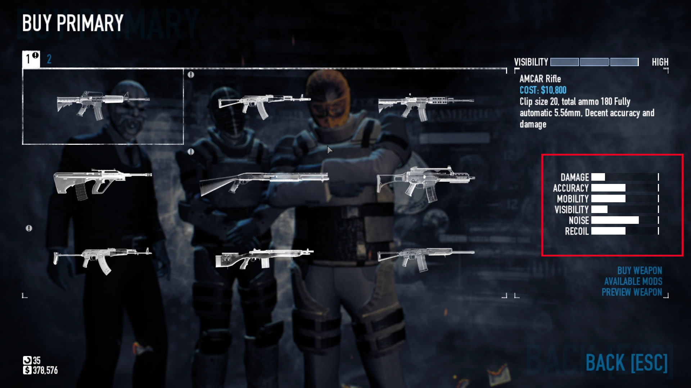
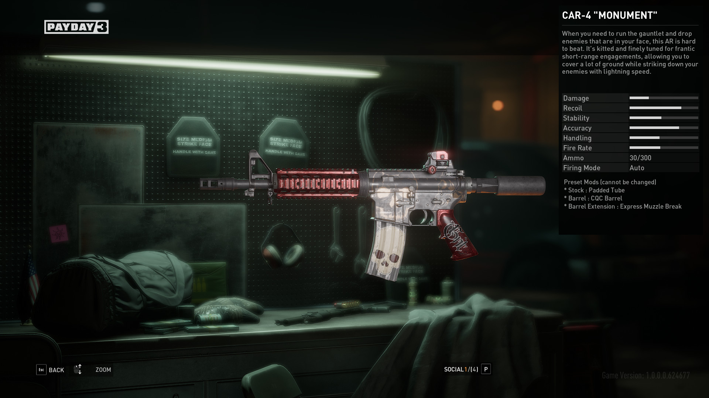

Clareza na Transmissão de Informações
Independente do gênero do jogo que você está produzindo, uma das principais considerações que você deve ter em mente é o modo que as informações estão sendo transmitidas. Nesse artigo, o foco principal será a comparação entre distintas formas de mostrar ao jogador certas informações, comparando casos semelhantes e ressaltando os aspectos positivos e negativos observados entre os casos.
Caso 1. PAYDAY 2 x PAYDAY 3
Começamos com um caso curioso onde os desenvolvedores, de certa forma, se recusaram a aprender com seus erros.
Contextualizando um pouco, ambos jogos analisados são da mesma franquia, eles pertencem ao gênero de ação e tiro na perspectiva primeira pessoa focados em uma fantasia de ladrões. O importante para nós nesse artigo são as armas utilizadas no jogo, seus atributos e como eles são mostrados.
Ambos os jogos possuem uma vasta gama de armas diferentes que possuem vários fatores, como dano, o quão barulhenta a arma é, o recúo e facilidade de uso dessa arma, a sua taxa de tiros, munição, etc.. Porém, o jeito que eles mostram essas informações (pelo menos atualmente) difere bastante.
No começo do jogo, PAYDAY 2 mostrava os atributos de uma arma por barras, como ilustrado na imagem abaixo.

Esse método de mostrar atributos foi utilizado na beta do jogo e recebeu diversas críticas, majoritariamente dos usuários mais investidos no jogo, por ser muito obtuso. Fora a falta de alguns atributos que são convencionais nesse tipo de gênero, como a taxa de fogo da arma, As barras não indicavam com clareza os atributos, como os jogadores deveriam interpretar uma arma com "dano com uma barra não muito cheia"? Já que a barra não está muito cheia, isso parece ser ruim, mas o quão ruim? Essa barra faz uma comparação com o que? Você pode modificar as armas, essas modificações estão fazendo o que? E essa arma sequer está modificada? Os desenvolvedores mudaram pouco tempo depois para um modelo mais específico que utiliza números, ilustrado na imagem abaixo.

Esse novo modelo foi aceito pela grande maioria dos jogadores como superior ao anterior, sendo bem mais completo, mostrando até os efeitos das habilidades modificações feitas na arma e como elas afetam os atributos e sendo menos abstrato pela utilização de números.
Esse ajuste não se manteu no desenvolvimento do jogo seguinte da franquia, PAYDAY 3, que retornou ao abstrato modelo de mostrar as estatísticas das armas por barras, como demonstrado abaixo.

Esse modelo foi, novamente, majoritariamente criticado pelos jogadores do jogo, que dessa vez questionam de forma mais dura o por que da adoção desse modelo, já que a franquia já tinha se deparado com esse problema.
Caso 2. Honkai: Star Rail x Fate/Grand Order
Mudando um pouco de gênero, ambos os jogos abordados a seguir são RPGs baseados em turno. Em ambos os jogos, os jogadores podem montar times com personagens variados, com habilidades variadas para vencer batalhas. Com uma variedade grande de personagem, os desenvolvedores do jogo precisam transmitir de forma clara o que essas habilidades fazem.